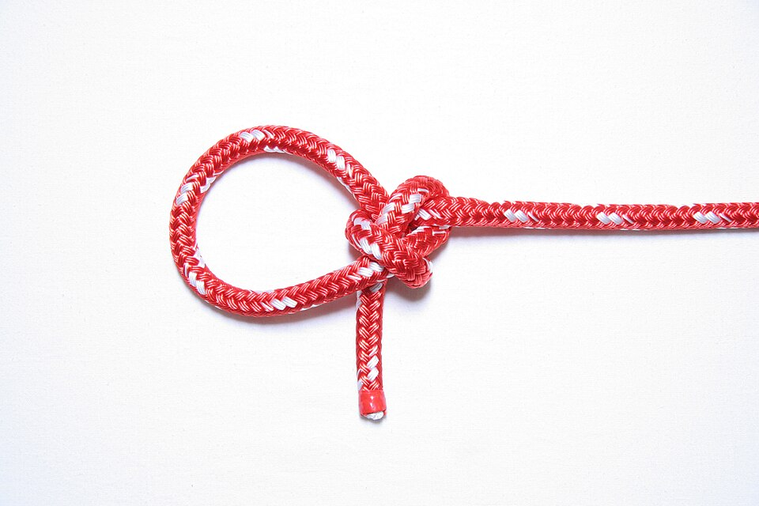

FR
FRNœuds et cordes #2 – Les nœuds en fin de corde
YouTube
▶ Ouvrir la vidéo · à valider par visionnageCinq nœuds complémentaires à ceux de l’atelier (huit tressé, cabestan, demi-cabestan et mule). Pour chacun : à quoi il sert, le pas-à-pas, les erreurs fréquentes et où trouver une vidéo. Le formateur montre le geste ; la fiche est une aide-mémoire.
Repères. Un nœud diminue la résistance d’une corde (variable selon le nœud, le matériau et la construction). Les nœuds de cette fiche ne remplacent ni la notice du fabricant ni la consigne du site, et ne servent pas à fabriquer un point d’ancrage antichute sans validation. Voir aussi la fiche cordes. Les photos et la planche de référence portent leurs auteurs et licences ; les miniatures vidéo ouvrent les démonstrations. Les gestes se travaillent sur corde réelle avec le formateur. Crédits des médias.
Nœud d’arrêt (simple et double) Nœud en huit simple (nœud d’arrêt en huit) Nœud de chaise Nœud de pêcheur double Nœud de sangle
Chaînes de référence : chaîne CATC-S · ALTRI MONTI
En bref : Un nœud d’arrêt limite le passage d’un bout de corde dans un dispositif, uniquement si son type et son volume sont adaptés à la notice. Un connecteur n’est pas un descendeur.
 FR
FRYouTube
▶ Ouvrir la vidéo · à valider par visionnage🔎 Vidéos sur ce nœud (recherche) · à valider par visionnage avant diffusion
En bref : Nœud d’arrêt volumineux, plus facile à défaire après charge que le nœud d’arrêt simple. C’est aussi la première étape du huit tressé.
 FR
FRYouTube · chaîne Climb Up
▶ Ouvrir la vidéo · à valider par visionnage FR
FRYouTube · chaîne Minute Forme
▶ Ouvrir la vidéo · à valider par visionnage🔎 Vidéos sur ce nœud (recherche) · à valider par visionnage avant diffusion


En bref : Boucle fixe qui ne coulisse pas, réalisée autour d’une structure, d’un poteau ou d’un anneau. Très répandu sur chantier pour amarrer une corde.
 FR
FRchaîne CATC-S
▶ Ouvrir la vidéo · à valider par visionnage FR
FRYouTube
▶ Ouvrir la vidéo · à valider par visionnage🔎 Vidéos sur ce nœud (recherche) · à valider par visionnage avant diffusion


En bref : Assemblage de deux cordes ou cordelettes de même diamètre, ou fermeture d’une cordelette en anneau.
 FR
FRYouTube · chaîne pointsdechutes
▶ Ouvrir la vidéo · à valider par visionnage🔎 Vidéos sur ce nœud (recherche) · à valider par visionnage avant diffusion
En bref : Assemblage de deux bouts de sangle plate, ou fermeture d’une sangle en boucle.
 FR
FRYouTube · chaîne EMHM Chamonix (École militaire de haute montagne)
▶ Ouvrir la vidéo · à valider par visionnage🔎 Vidéos sur ce nœud (recherche) · à valider par visionnage avant diffusion
Retour aux fiches nœuds de l’atelier.
Une animation révèle un cheminement. La reconnaissance de l’image ne démontre ni le geste, ni l’habillage, ni le serrage.
| Contrôle observable | Ce que le binôme demande |
|---|---|
| Identifier les brins | Montrer le brin dormant et le bout courant sur la corde réelle. |
| Suivre le trajet | Reconstituer chaque passage sans saut ni croisement parasite. |
| Habiller | Aligner les brins selon la forme attendue, sans vrille indésirable. |
| Serrer | Reprendre les brins prévus et comparer le résultat à une référence fiable. |
| Vérifier les bouts libres | Justifier leur longueur par le matériau, le montage et la notice applicables. |
| Justifier l’usage | Distinguer exercice au sol et emploi autorisé dans un système réel. |
Les six vues photographiques du cabestan montrent une préparation à plat, avant installation. Les photos finales de cabestan et de pêcheur double complètent la lecture du résultat. Le demi-cabestan freine mais ne constitue pas un blocage autonome ; la mule et sa sécurisation exigent une démonstration encadrée.
Petzl · Nœuds, référence gestuelle sportive · Petzl · Notice CORDELETTE
La référence Petzl Nœuds relève du sport : elle n’autorise pas un montage professionnel. La qualification sur corde réelle est renseignée dans la grille du formateur.